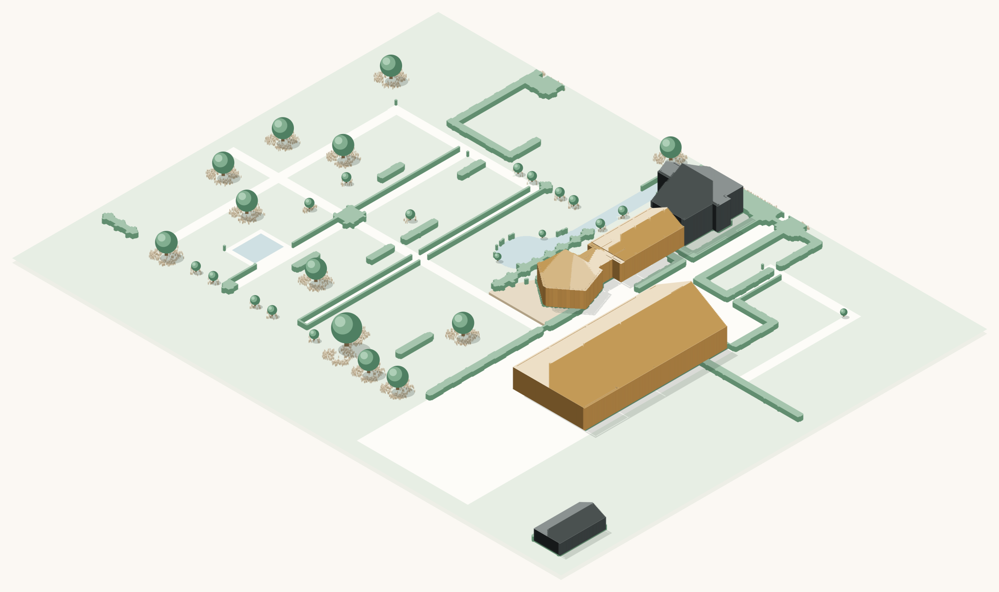

Werkversie. De grondvormen en posities komen uit de bestaande plattegrond; de hoogtes zijn een schatting naar de foto's. Daken volgen de opgave: puntdak over de volle lengte voor de boerderijgebouwen, een vijfvlakkig dak naar één punt voor de hooiberg. Goud = boekbaar, donker = woonhuis en bijgebouw, lichtbeige vlonder = het terras. De zonnepanelen zijn nog niet getekend.
